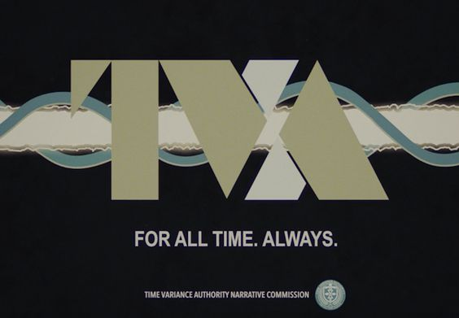

THE BEGINNING
The best plot twist was finding you.
Somewhere in all the possible universes, ours crossed paths. I would choose that branch again and again.
TIME VARIANCE AUTHORITY · PERSONAL TRANSMISSION
A birthday variance has been detected in the sacred timeline. It is classified as extremely special.
FOR ALL TIME. ALWAYS. · AUDIO OPTIONAL